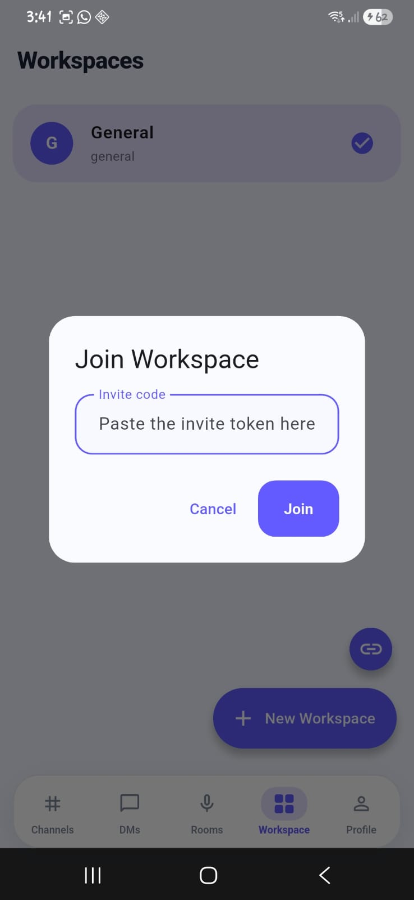
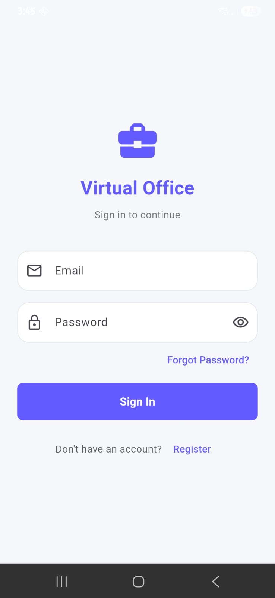
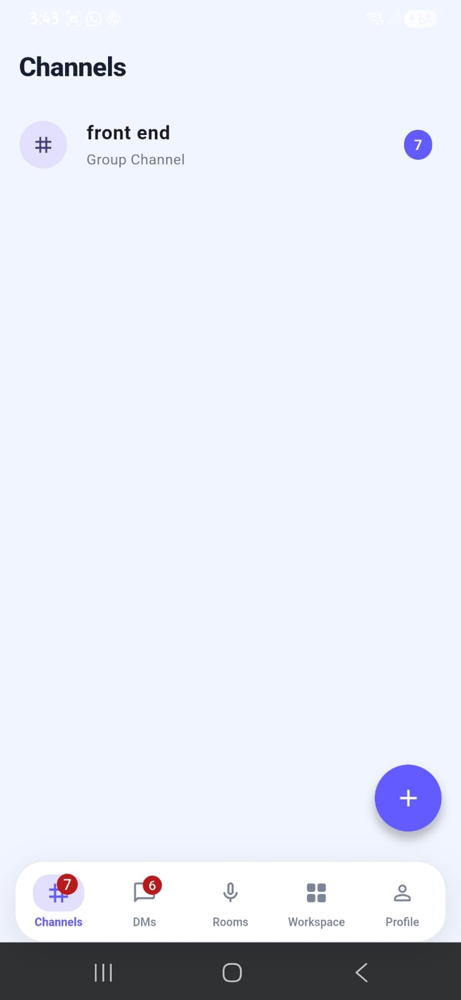
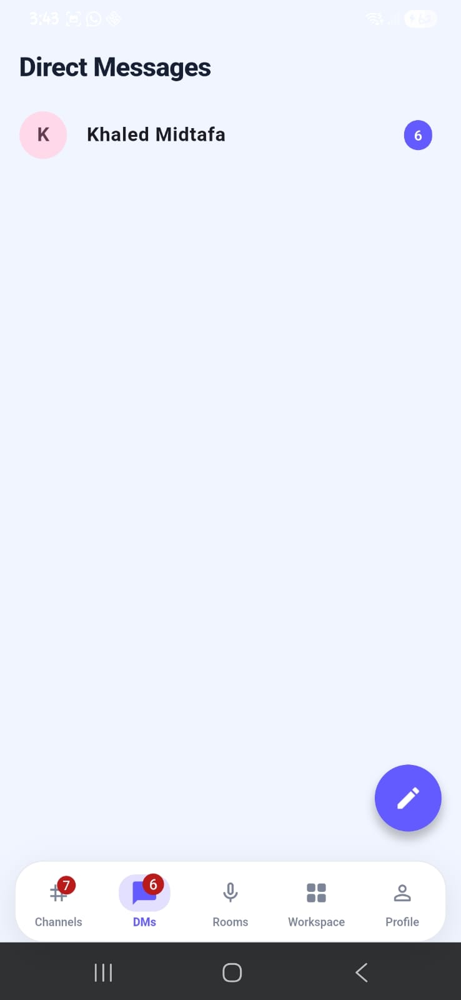
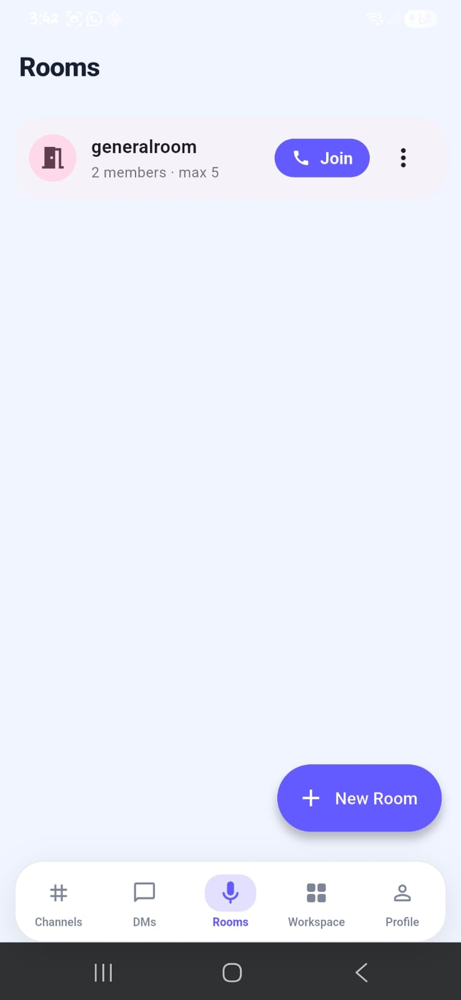

Features / Mobile — the whole workspace, in a pocket
Mobile — the whole workspace, in a pocket
MobileFive tabs — Channels, DMs, Rooms, Workspace, Profile — talking to the exact same gateway, same JWT, same permissions as the browser. There is no separate mobile backend.

Sign in with the same account you'd use on the web.

Channels, browsed and created from the phone — they land in the same list the browser sees.

Direct messages, live — the same STOMP contract the browser uses.

Join a voice room straight from your pocket.
